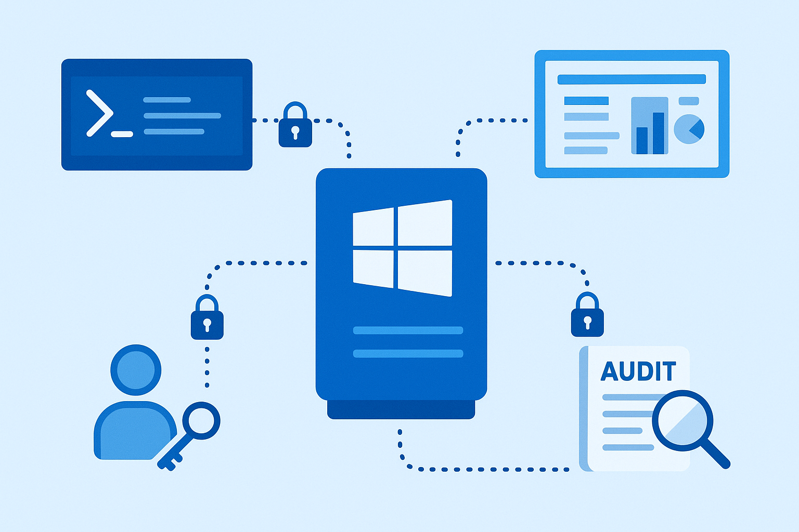

Digital Forensics Investigation of a Compromised Windows VM
Performed end-to-end forensic analysis of a compromised VM to trace PowerShell-based data
exfiltration via FTP. Used FTK Imager, Wireshark, and Steghide to recover artifacts, reconstruct attacker persistence mechanisms, and propose mitigations.
GitHub Repo

AI Security Research: Defensive Architectures Against Generative AI Exploitation
Co-authored research on securing AI systems from adversarial attacks (data poisoning, model theft).
Proposed adaptive learning defenses and NIST-aligned AI security frameworks integrating policy automation and real-time threat intelligence.
GitHub Repo
Networking Infrastructure and Security Protocol Analysis
Developed a secure network performance framework exploring throughput optimization and congestion management.
Assessed IEEE 802.x protocols (WPA2/WPA3, 802.1X) for vulnerabilities and access control efficiency.
Designed and simulated topologies (Star, Mesh, Ring) to evaluate resilience and latency.
GitHub Repo

Secure Remote Administration Architecture Project
Developed a secure Windows Server administration framework using PowerShell Remoting (HTTPS), MMC, and Windows Admin Center.
Implemented encrypted sessions, least-privilege access, and audit logging to harden remote management workflows.
GitHub Repo
Secure Infrastructure Deployment — DHCP, DNS & Print Services
Configured and secured core network services with AD authorization, DNSSEC, and Print Spooler hardening.
Mitigated threats like rogue DHCP servers, DNS cache poisoning, and PrintNightmare through layered security controls and auditing.
GitHub Repo
Active Directory Hardening & Access Control Implementation
Engineered a compliant AD environment with enforced password policies, lockout thresholds, RBAC-based group management,
and NTFS permissions with auditing. Delivered a fully auditable, least-privilege access model.
GitHub Repo